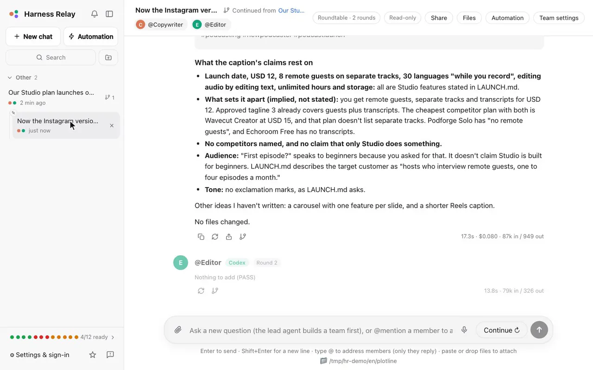
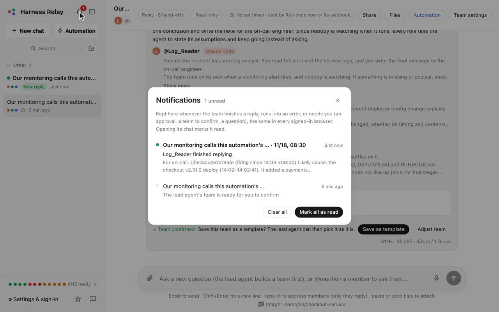

Your conversations
Everything the team says stays in its conversation, listed in the sidebar. This page shows how to keep them in order, go back and try another way, look at the files the agents made, share a conversation, and be told when the team is done or needs you.
The conversation list
The sidebar lists your conversations, newest first. Each one keeps running when you switch to another or close the tab, and a badge under its title says where it stands:
| Badge | What it means |
|---|---|
| Needs you | An agent is waiting for your approval. |
| Confirm the team | The lead agent designed a team for your question. Confirm it and the team answers. |
| Answer needed | An agent asked you something, and the team waits for your answer. |
| Goal held up | The goal an automation tracks is held up, and the latest reply says what it needs from you. |
| Replying | The team is working. |
| New reply | It finished while you were looking at something else. |
| Error | The last reply ended with an error you have not looked at yet. |
A clock before the time means the conversation has an automation. Point at it to see the next time; it turns amber when the last time was not sent, or its last check failed.
- Rename a conversation: click its title at the top of the chat.
- Delete one: point at it in the sidebar and click ×. Conversations branched from it stay.
- Make room: the panel button next to Harness Relay at the top of the sidebar collapses it, and the button left in the corner brings it back. This browser remembers the choice.
On a phone, the sidebar is a drawer: open it with the menu button, or swipe right anywhere on the page, and swipe left to close it. See Use it from your phone.
Pin, group and search
Pin a conversation
Point at a conversation and click the pin at its top-left corner (on a phone or tablet the pin is always there). It is then listed under Pinned, above your groups, and stays in its group too. Click the yellow pin to unpin it. Pins are the same in every browser you use.
Groups
- Make a group: click New group, the folder button beside Search, type a name and press Enter.
- Move a conversation: drag it onto a group, or point at it, click its folder button and pick a group. On a phone or tablet, use the folder button.
- Other comes last and always exists: conversations in no group are there. Deleting a group moves its conversations to Other; none is deleted.
- Click a group's name to collapse it. To rename or delete it, point at its name and click the pencil or ×.
Once you have groups, the lead agent sorts each new conversation for you: it reads the first message and puts the conversation in the group it fits (it says Sorting… meanwhile), or leaves it in Other. It does so once per conversation, and never moves one you moved yourself.
Search
Click Search under New chat and type. You get the conversations whose title or messages contain every word you typed, ignoring case, with the words highlighted; those whose title matches come first. Click one to open it, or press Esc to go back to your groups. Chinese works without spaces.
Copy, edit, retry and branch
The small buttons under a message are icons: point at one to see its name. Under an agent's reply they are always there; under your own message they show when you point at it (always, on a phone or tablet).
- Copy copies the message as Markdown, exactly as it was written, links and tables included.
- Edit, under your own message, lets you change it and send it again. Everything after it is deleted and the team answers again from there. Files the deleted replies changed are not changed back: if any changed files, you are asked to confirm first.
- Retry, under a reply, has that agent answer again. Its reply and everything after it are deleted; outside relay mode, the agents after it in the same round answer again too.
Branch a conversation
To try another direction without losing where you are, click Branch conversation under an agent's reply. A new conversation opens, named Branch · and the original's title, with a copy of every message up to that reply, and the team, settings and group the original has now. The original stays exactly as it was, and both go their own way from there.
Files are not rewound. Both conversations work in the same folder, as the original left it, not as it was at the reply you branched from. The agents in the branch are told so.
The branch is listed under the conversation it came from, and the two stay together in one group: moving one moves both. The first message you send in the branch names it. To ask something else after one of your own questions, branch from the reply before it, or edit the question.

Browse the files
Files, at the top of the chat, opens the conversation's working directory. Click a file to preview it: code with line numbers, Markdown as it reads (or its source), images and videos.
- Download saves any file to the device you are using, a phone included, also one that cannot be previewed, such as a PDF or slides.
- Copy path copies the file's full path.
-
The download button at the end of the toolbar saves the folder you are in as a ZIP file; so does the one
beside a folder in the list. A folder too large to zip, usually because of
node_modulesand the like, is offered without the files git ignores when it is in a git repository. - In parallel mode you can also pick an agent's own copy of the folder, to look at its result before you apply it.
Files an agent made for you also show as links in its reply, with a download arrow: click one to save the file. On a phone, the list and the preview take turns; Back to the list returns.
Notifications
Harness Relay can tell you when the team finishes replying and when it needs you: an approval, a team to confirm or a question. Turn it on under Settings & sign-in → Notifications and sound, in each browser and on each phone you use:
- Show notifications shows a system notification with the conversation's title, who replied and the start of the reply. Click it to open the chat.
- Play a sound: two notes when a reply is done, three when you are needed.
- Tell me when picks which of the two you hear about, and Send a test notification tries it out.
Nothing is shown for the conversation you are looking at while its window is in front. On a phone, notifications can reach you even while it is locked: see Use it from your phone. In the desktop app they show while its window is open; to hear about replies with the window closed, open Harness Relay in your browser too and turn notifications on there.
A notification shows the start of a reply, or the command an approval is about, so it can show on a locked phone. To keep that private, hide notification previews on the lock screen in the phone's settings.
The bell
The bell at the top of the sidebar keeps every notification, whatever you chose above: replies done or ended with an error, approvals and items waiting for you, teams to confirm, questions and goals held up. Its red count is how many you have not read, and the list is the same in every signed-in browser. Click one to open its chat; opening a chat marks its notifications read. Mark all as read and Clear all are at the bottom of the list.
